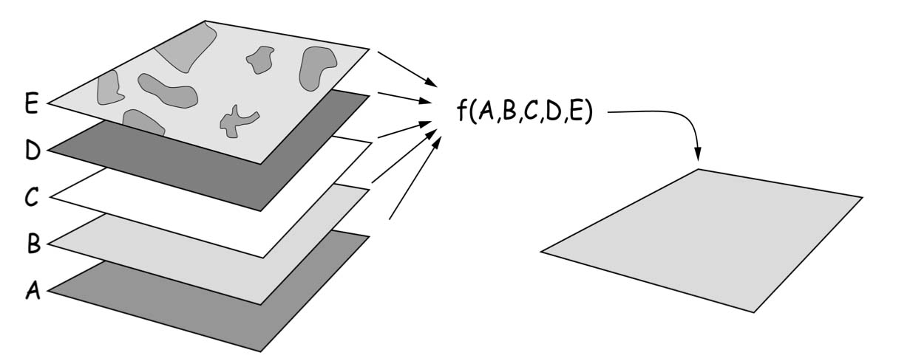
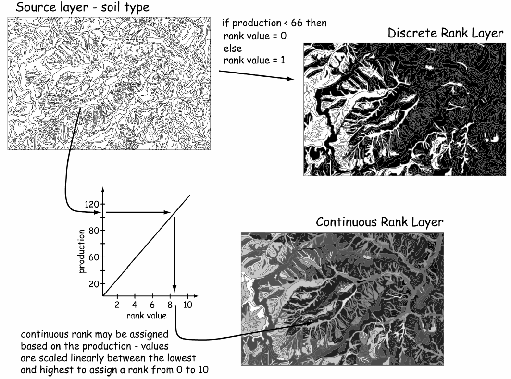
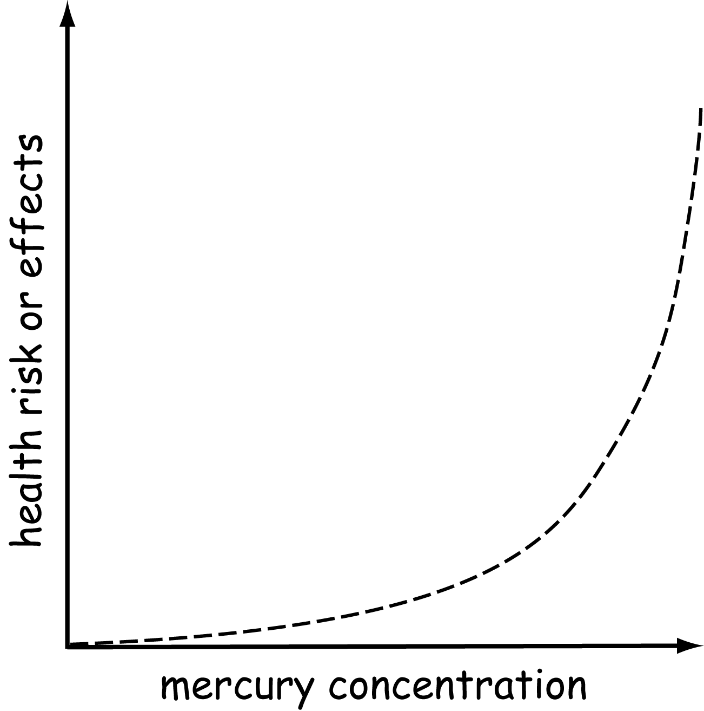
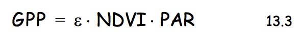
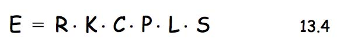
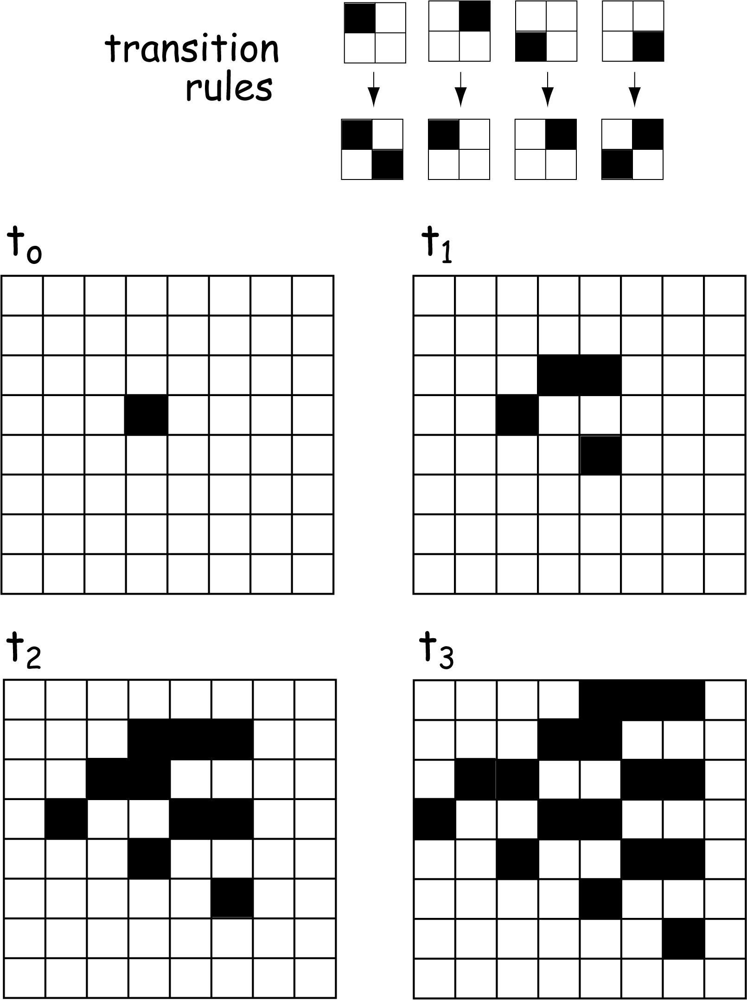
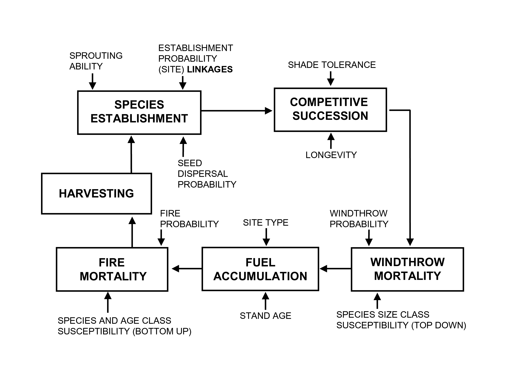
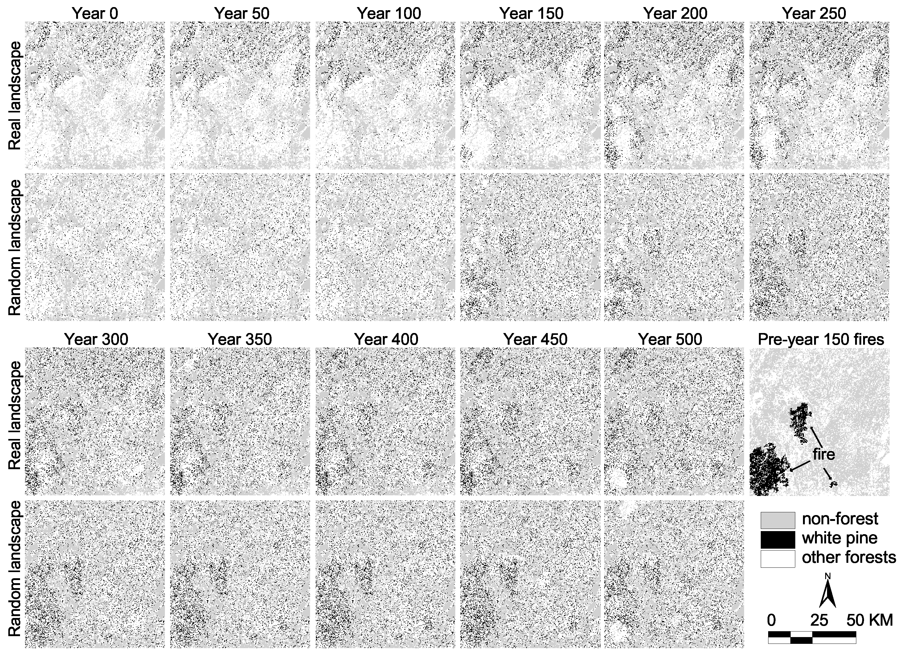

Intro to GIS
Evan Lue, PhD
Multiple inputs and processes to produce an output
Bolstad 2012, Fig 13.2
Cartographic Models
Simple Spatial Models
Bolstad 2012, Fig 13.1
Ex: Septic Systems
Bolstad 2012, Fig 13.3
Bolstad 2012, Fig 13.4
Discrete and Continuous Outputs
Bolstad 2012, Fig 13.5
This graph shows a threshold
Bolstad 2012, Fig 13.6
Bolstad 2012, Fig 13.7
Bolstad 2012, Fig 13.7
Bolstad 2012, Fig 13.8
Bolstad 2012, Fig 13.9
Bolstad 2012, Table 13.1
Bolstad 2012, Fig 13.10
Bolstad 2012, Fig 13.11
Bolstad 2012, Fig 13.12
Bolstad 2012, Fig 13.13
Bolstad 2012, Fig 13.14
Bolstad 2012, Fig 13.15
Bolstad 2012, Eq 13.2
GPP - Gross Primary Productivity
Epsilon - Plant Conversion Efficiency
NDVI - Normalized Difference Vegetation Index
PAR - Photosynthetically Active Radiation
Bolstad 2012, Eq 13.3
Revised Universal Soil Loss Equation
E - Erosion
R - Rainfall
K - Soil erodibility
C - Crop effects
P - Management practices
L - Slope length
S - Steepness
Bolstad 2012, Eq 13.4
Bolstad 2012, Fig 13.16
Bolstad 2012, Fig 13.17
Bolstad 2012, Fig 13.19
Transitions determine outputs in time steps
Bolstad 2012, Fig 13.20
Individual "agents" move over time.
Useful in wildlife modelling or crowd dispersion/evacuation.
LANDscape DISturbance
Bolstad 2012, Fig 13.23
Location of White Pine stands after modeling growth and fires
Bolstad 2012, Fig 13.25